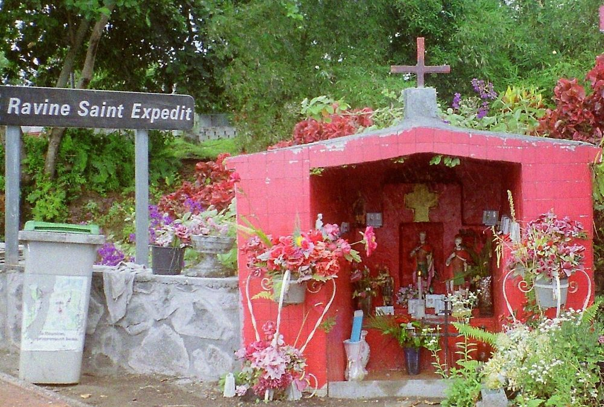
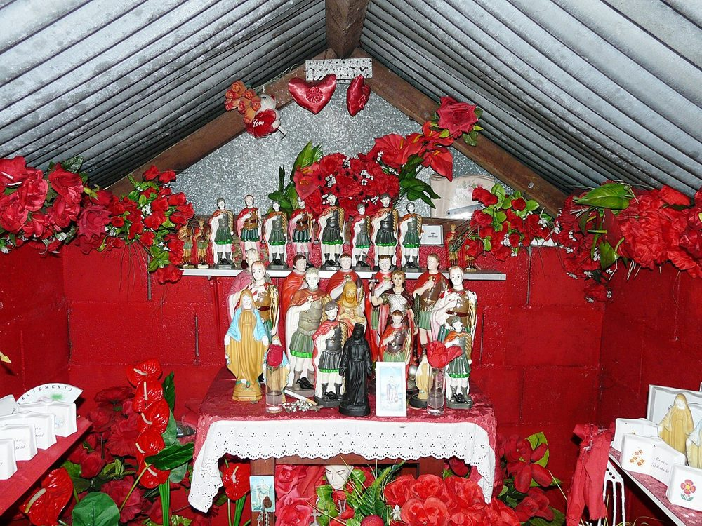
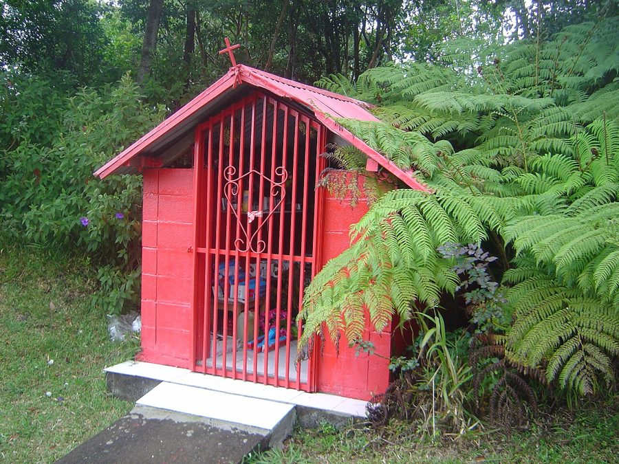
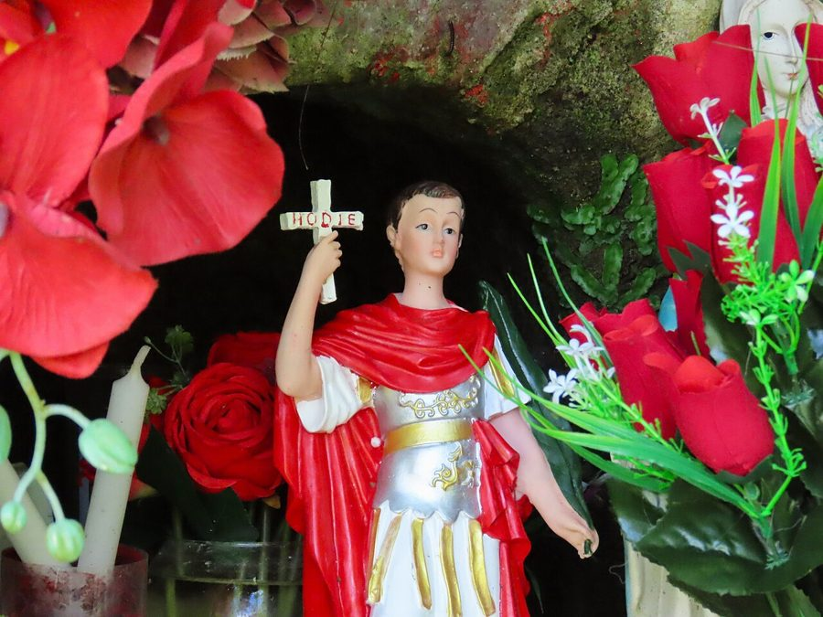
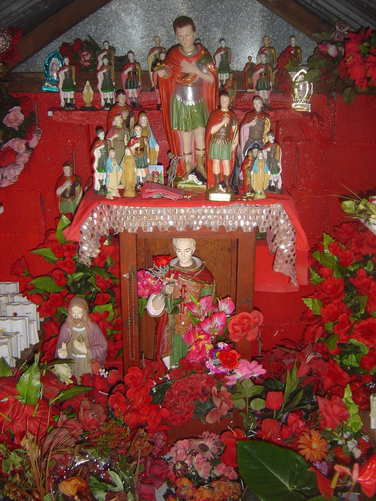

Réunion เรอูนียง
DocumentedFanny Fleurié, stranded in Marseille by the 1918 flu, vowed him a statue if she got home. A bishop blessed the first one in Saint-Denis on 3 May 1931. The red comes from Tamil practice and the goddess Kali; he stands beside Hindu gods without merging into them. Islanders call him un malbar-catholique, a Tamil Catholic.
มีบันทึกฟานี เฟลอรีเย ติดอยู่ที่มาร์กเซยช่วงไข้หวัดใหญ่ปี 1918 บนไว้ว่าถ้าได้กลับบ้านจะถวายรูปปั้น บิชอปเสกรูปแรกที่แซ็งเดอนี เมื่อ 3 พฤษภาคม 1931 สีแดงมาจากประเพณีทมิฬและเทวีกาลี ท่านยืนเคียงเทพฮินดูโดยไม่รวมเป็นองค์เดียวกัน ชาวเกาะเรียกท่านว่า "มะละบาร์-คาทอลิก" คือคาทอลิกเชื้อสายทมิฬ